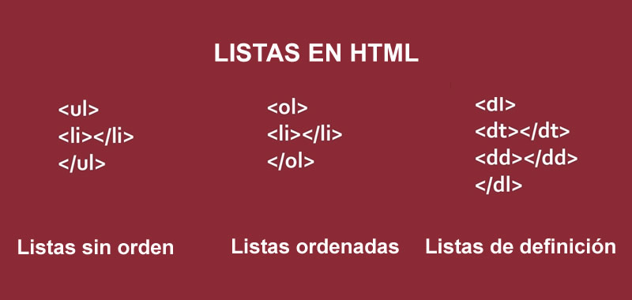

Listas
Las listas en HTML nos permiten crear conjuntos de elementos en forma de lista dentro de una
página, todos los cuales irán precedidos, generalmente, por un guion o número.
Los tipos de listas en HTML son los siguientes:
Listas ordenadas
Listas desordenadas
Listas de definiciones

Delgado, H. (2020). Listas HTML – Sin orden ul, ordenadas ol y de definición dl. Recuperado de
https://disenowebakus.net/listas-html.php